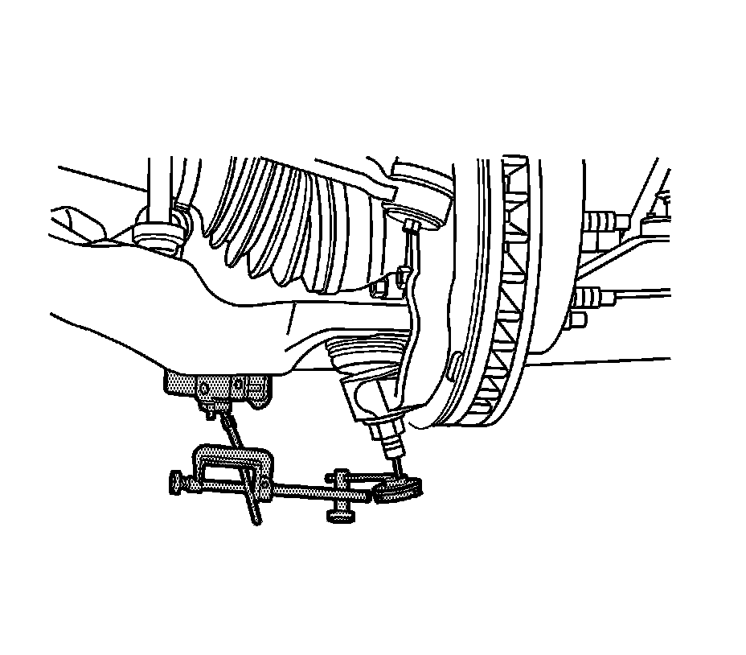

Ball Joint Inspection (Lower Ball Joint)
Ball Joint Inspection (Lower Ball Joint)
Tools Required
J 8001 Dial Indicator Set

1. Raise and support the vehicle. Refer to Lifting and Jacking the Vehicle.
2. With the wheel and tire on the vehicle, lift the suspension corner by hand to determine if any looseness is present. If vertical free play is experienced proceed with the following instructions.
3. Remove the wheel and tire.
4. Clean and inspect the ball joint seals for cuts or tears. If the ball joint seals are damaged, replace the ball joint. Refer to Lower Ball Joint Replacement (2500 Series).
5. Install and position the dial indicator from J 8001 against the end of the ball joint.
Important: Do not pry between the lower arm and the wheel drive shaft boot or in such a manner that the ball joint seal is contacted. Damage to the wheel drive shaft boot will result (4WD).
6. Gently lift or pry the suspension upward then let it settle.
7. The dial indicator reading should be no more than 2 mm (0.079 in). If the reading is out of specification, replace the ball joint.